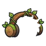

สไลม์หินตะไคร่
มอนธาตุดิน Lv 8–38
เจอที่
| แมพ | โซน | Lv | ภูมิภาค |
|---|---|---|---|
| ป่าเห็ดเรืองแสง | 25–31 | ป่ากองไฟ | |
| ป่าเห็ดเรืองแสง | บึงเงาจันทร์ | 34–38 | ป่ากองไฟ |
| ถ้ำค้างคาวริมทุ่ง | 8–12 | ป่ากองไฟ | |
| เหมืองมด ชั้น B1 | 15–20 | ป่ากองไฟ | |
| ป่าโอ๊กยักษ์ | 24–34 | ป่ากองไฟ | |
| ป่าโอ๊กยักษ์ | ตอโอ๊กหอคอยกระรอก | 34–38 | ป่ากองไฟ |
| กระท่อมพรานร้าง | 24–34 | ป่ากองไฟ | |
| กระท่อมพรานร้าง | หน้ากระท่อมพราน | 34–38 | ป่ากองไฟ |
| บ่อน้ำจันทร์กลางป่า | 24–34 | ป่ากองไฟ | |
| บ่อน้ำจันทร์กลางป่า | ขอบบ่อน้ำจันทร์ | 34–38 | ป่ากองไฟ |
ค่าสถานะตามเลเวล
| Lv | HP | ATK | DEF | MDEF | EXP | Job |
|---|---|---|---|---|---|---|
| 8 | 571 | 14–21 | 3 | 2 | 10 | 8 |
| 23 | 1,310 | 28–43 | 8 | 6 | 21 | 17 |
| 38 | 3,379 | 52–78 | 14 | 9 | 31 | 25 |
ตีด้วยธาตุไหนดี
แรงขึ้น: ไฟ ×1.5 พิษ ×1.25
เบาลง: ลม ×0.5 ดิน ×0.25
วัตถุดิบที่ดรอป
| ของ | โอกาส | |
|---|---|---|
| เปลือกหินตะไคร่ | 60% | 1 ชิ้น (15% ได้ 2) |
อุปกรณ์ที่ดรอป (12)
| ของ | โอกาส |
|---|---|
| 0.25% | |
| 0.25% | |
| 0.25% | |
| เกราะหินผา (เกราะอก) | 0.15% |
| เกราะหินผา (สนับขา + รองเท้าเกราะ) | 0.15% |
| ชุดนักเก็บสมุนไพร (เสื้อ) | 0.15% |
| ชุดนักเก็บสมุนไพร (กางเกง + รองเท้า) | 0.15% |
| 0.12% | |
 หูฟังไม้ใบไม้ | 0.08% |
| 0.06% | |
| เกราะหินผา (จี้หินผา) | 0.05% |
| ชุดนักเก็บสมุนไพร (ถุงหอมสมุนไพร) | 0.05% |
สกิล
แอ่ง (Lv 25+) · แอ่ง (Lv 60+) · ปาตกใส่ (Lv 60+)